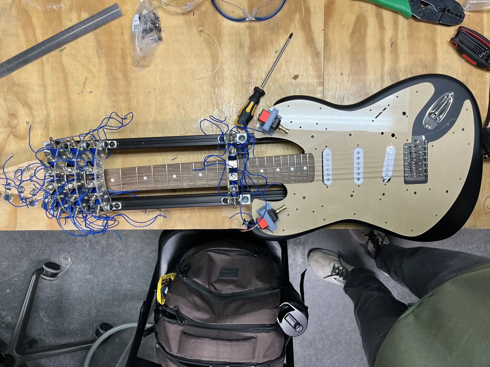
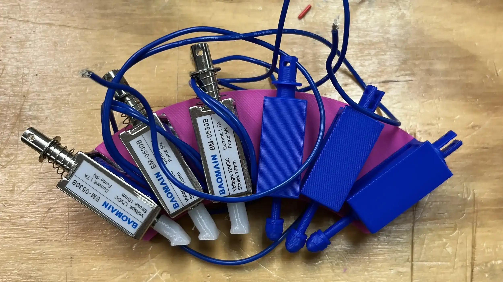
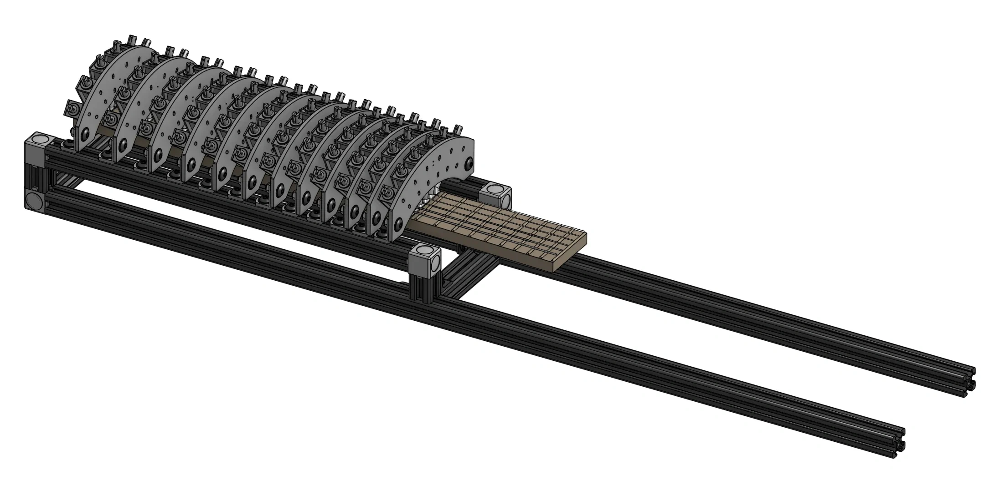
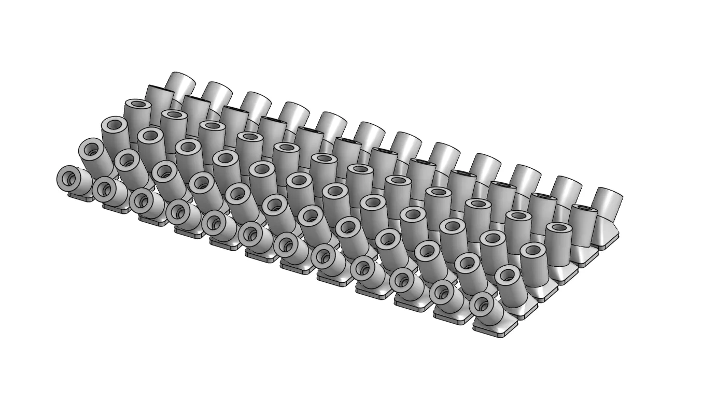
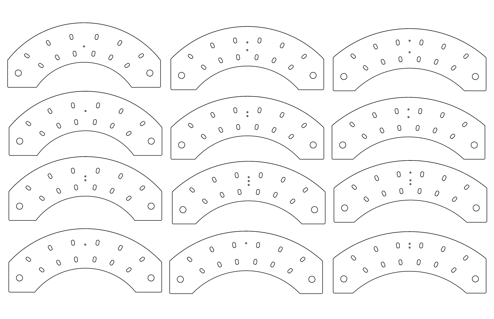
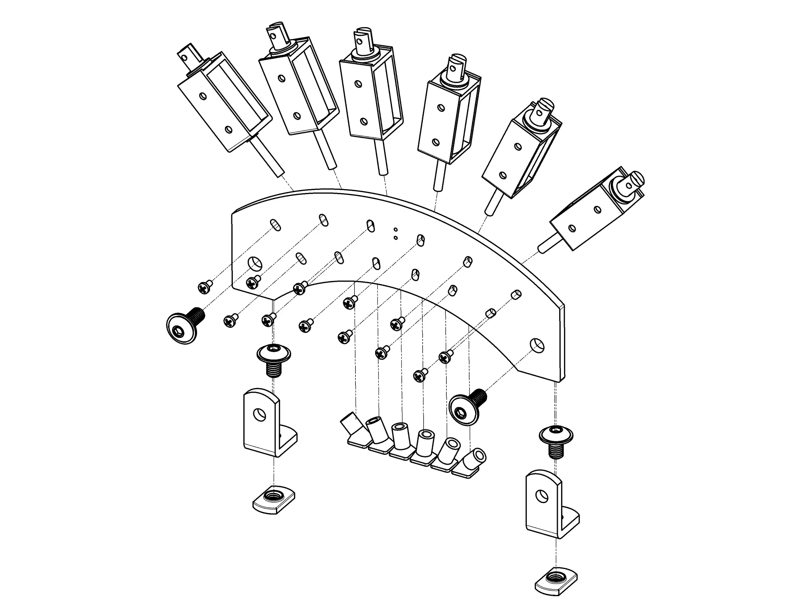
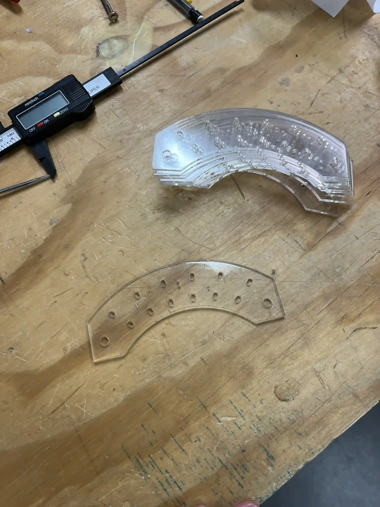
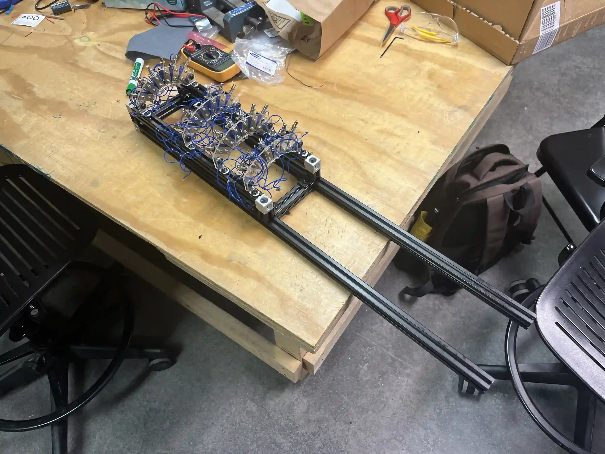
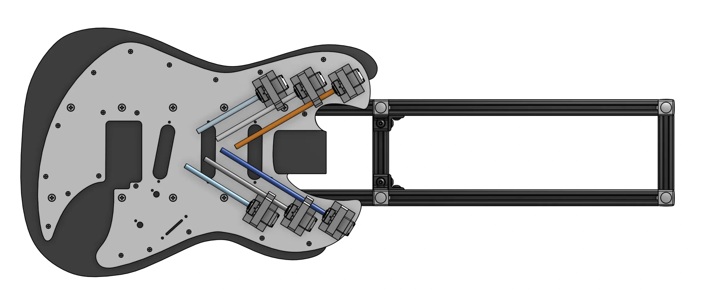
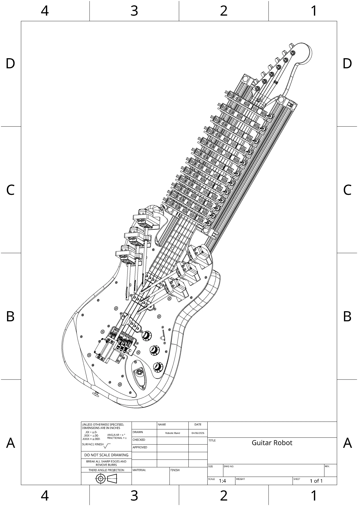

Designed a solenoid-driven mechanism to press frets on a guitar.

Overview
In the Northwestern University Robotics Club (NURC), I am the co-lead of the guitar robot on the Robotic Band subteam, overseeing the mechanical design. I lead weekly meetings, track progress on both the guitar and drum robots, and facilitate communication between the two teams. Our goal is a robot that plays the guitar by itself, with solenoids pressing the frets and a separate mechanism plucking the strings. The robot is still in progress; see Fig. 1 for an early prototype pressing the strings and producing sound.

My primary contribution has been leading the design of the fret-pressing mechanism. After researching different actuation methods, I chose solenoids to press the strings from frets 1 to 12. Because the solenoids are too large to mount side by side on a single fret, I developed an arc layout for each fret array. I derived the geometry equations and used MATLAB to calculate the specific dimensions and mounting angles for each solenoid across each string and fret, then modeled the arrays in Onshape. I 3D printed a prototype of a single array, using a mix of real and printed solenoids, to validate the geometry, shown in Fig. 2. To test actuation, I built a capo-style prototype that clamps onto the guitar neck, shown in action in Fig. 1.
With the concept validated, I designed the full mechanism in CAD using aluminum extrusions as a modular frame so the fret arrays can slide on and be repositioned. I carefully measured the fretboard to ensure accurate spacing between arrays. The full assembly is shown in Fig. 3. I also designed angled solenoid tips to match the mounting angle of each solenoid and optimize string contact, see Fig. 4.


Next, I laser cut the fret arrays from acrylic. Each array features slotted holes for solenoid mounting, side mounting points, and binary-encoded holes indicating the fret number. The full DXF layout is shown in Fig. 5, and an exploded view of the 12th fret array is shown in Fig. 6. The laser-cut acrylic arrays are pictured in Fig. 7. After cutting the aluminum extrusions to length, I assembled the frame with four fret arrays and the available solenoids, and resin-printed the angled tips. The prototype assembly is shown in Fig. 8.




Alongside the fret-pressing mechanism, I designed a new faceplate, replacing the pickguard, that serves as the shared mounting surface for both the fret-pressing mechanism and the string-plucking mechanism. The CAD design with fasteners is shown in Fig. 9. A first version was laser cut from acrylic to verify that the mounting holes align with the existing guitar screw holes. The acrylic faceplate with the fret-pressing assembly is shown in Fig. 10.

Currently, I am refining the fret-pressing mechanism, verifying dimensions against the guitar, and making adjustments to optimize string contact for sound quality. The full CAD drawing with dimensions for manufacturing is shown in Fig. 11.
